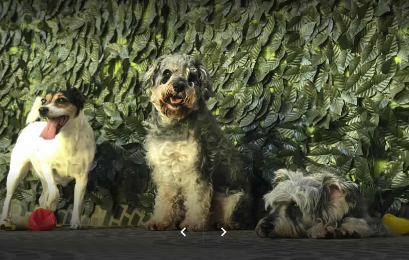

A mais de 10 anos atuando no ramo Pet, contiuamos dia após dia buscando a excelência na prestação de nossos serviços tendo como principal ponto de partida o amor aos animais.
Por isso não trabalhamos com gaiolas, seu amicão aguarda a vez dele de tomar banho em um ambiente seguro, tranquilo e espaçoso. Isto mantem eles calmos e felizes.
